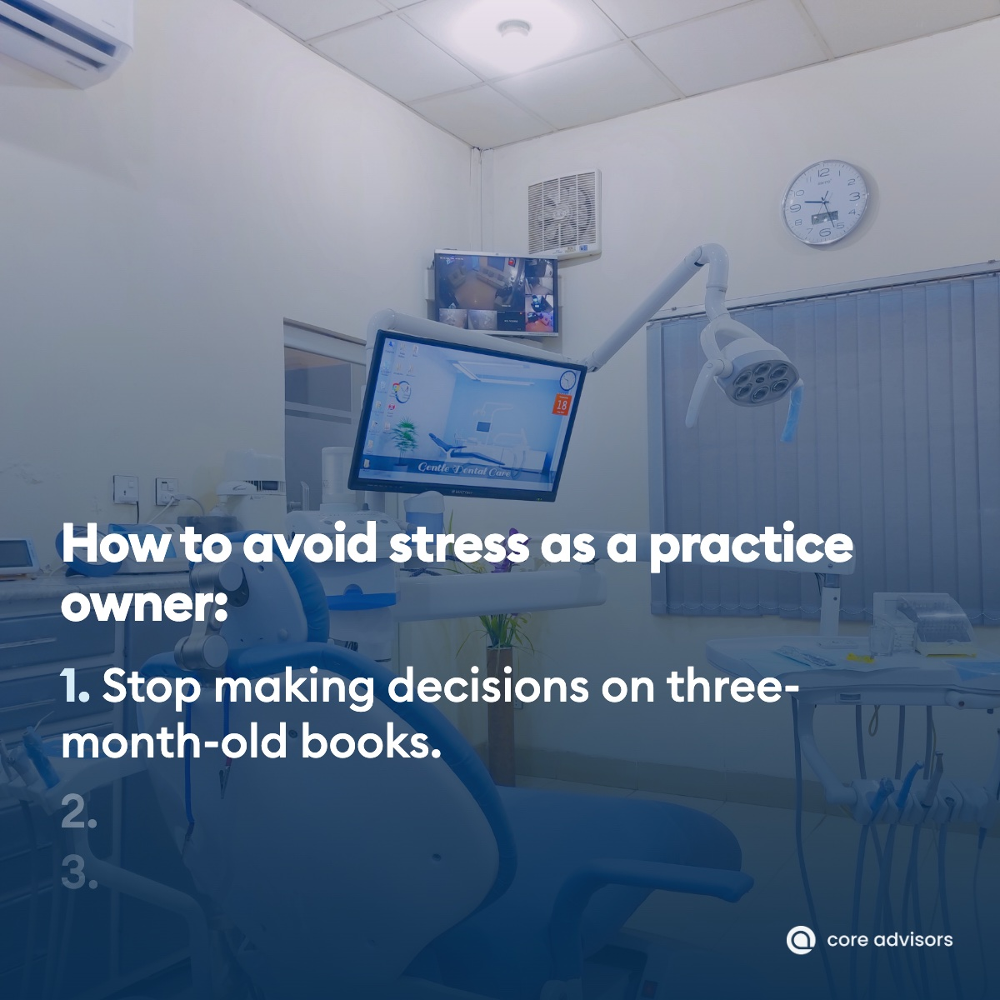

All nine Core Advisors posts for November, each shown with its caption.
C
Core Advisors
Financial services for dental practice owners
Tue Nov 10 · 🌐
If you own a practice, you're probably the one keeping your CPA, advisor, bookkeeper and payroll company in sync.
That's a second job on top of your clinical work. Every time something changes you re-explain the whole picture to each of them, and the tax plan and the retirement plan still don't line up.
We bring all of it under one team, so the people doing your taxes and the people managing your retirement are working from the same numbers.
#DentalPracticeOwner#DentistLife#DentalPractice
👍 Like💬 Comment🔁 Repost➤ Send
C
Core Advisors
Financial services for dental practice owners
Fri Nov 13 · 🌐
You're about five P&L numbers away from seeing what your practice could be worth.
Our free practice value calculator asks for your collections and a few expense lines, then shows a value range for two kinds of buyers and how much more the practice could be worth at a stronger margin.
If you've ever wondered whether a buyer would pick your practice over the one down the road, this is your sign to find out.
Our free sellability check asks what type of practice you have, then ten questions about how it runs day to day. It gives you a score out of 100 and the first three things we'd fix to make the practice more attractive to buyers.
If you're thinking about selling to a DSO, the systems binder you spent years on isn't the first thing they'll ask for.
What they usually want is your last few years of tax returns, your employee list with compensation, your fee schedule and reports from your practice-management software, because those show what the practice actually earns. The way your practice runs still matters, but mostly through what it does to those earnings.
In a world where you can be anything, be the practice owner who walks into January already knowing the tax bill.
Good tax planning means you start the year with a full projection of what you'll owe and which strategies are already in motion to keep more of it. That's a much better way to begin the year than a surprise bill in April.
If you had to zoom in to read that, here it is at full size: plan your practice and personal taxes together.
Planning for dentists often stops at the practice, but the salary you pay yourself from an S corp changes your payroll taxes, how much you can put into a 401(k) and what's left on your personal return. When one team looks at both sides together, those decisions get made together.
Happy Thanksgiving from all of us at Core Advisors.
Thank you to the practice owners and their teams who trusted us with their numbers this year. We hope you get a long weekend away from the schedule with the people you love.
#Thanksgiving#DentalPracticeOwner#Grateful
👍 Like💬 Comment🔁 Repost➤ Send
C
Core Advisors
Financial services for dental practice owners
Fri Nov 27 · 🌐
How to avoid stress as a practice owner: stop making decisions on books that are three months old.
Let's look at an example. Say collections are softer than usual for a couple of months over the summer. If the only numbers you see are quarterly or year-end, the window to respond has already closed by the time anyone notices.
We update our clients' books every week, so the levers we pull are based on what's happening in the practice now, not on a snapshot from last quarter.
#DentalAccounting#DentalPracticeOwner#DentalCFO

👍 Like💬 Comment🔁 Repost➤ Send
C
Core Advisors
Financial services for dental practice owners
Mon Nov 30 · 🌐
If you've valued your practice at five times what you take home, a buyer will probably come in lower.
Let's look at an example. A general practice collects about $1.6 million and the owner takes home around $600,000, so five times sounds like $3 million. A buyer still has to pay a dentist to do the owner's dentistry, though, and once fair pay for that work comes out, the practice's real EBITDA is closer to $360,000.